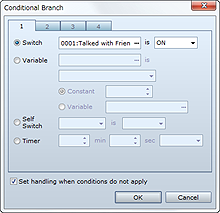
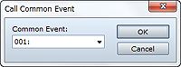
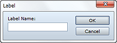
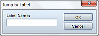
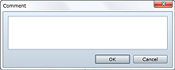

Sets the event command for which processing will branch, so that special processing will run only when the specified conditions are met. Selecting Set handling when conditions do not apply allows branching even when the specified conditions are not met.
Specify conditions based on the settings described below.
Sets a switch value as a condition. Specify the target switch and a value (on/off).
Sets the result of a comparison with the variable as a condition. Specify the variable to use, comparison value, and comparison method. To use a variable for the comparison value, select Variable and specify the variable to look up.
Sets the value of the specified self switch as a condition. Specify the target switch and a decision value (on/off).
Sets the time remaining on the timer as a condition. Specify the time limit and the decision value (more than/less than).
Sets actor information as a condition. Specify the target actor, information to look up (In the Party, Name, Skill, Weapon, Armor, or State), and decision criteria (specific items).
Sets the state of an enemy in battle as a condition. Specify the target enemy and decision criteria (Appeared/State). This is valid only in battle events.
Sets the direction the player or map event is facing as a condition. Specify the target character and direction. This is valid only in map events.
Sets whether the player is on the specified vehicle (boat, ship, or airship) as a condition.
Sets the party's total gold as a condition. Specify the amount of gold and comparison method (greater than/less than).
Sets the party's possession of the specified item as a condition.
Sets the party's possession of the specified weapon as a condition. Selecting Include Equipments will also make the weapons the actor has equipped subject to the condition decision.
Sets the party's possession of the specified armor as a condition. Selecting Include Equipments will also make the armor the actor has equipped subject to the condition decision.
Sets the pressing of the specified button as a condition.
Sets the evaluation results of a Ruby script as the standard.
Adds the Loop and Repeat controls for event command processing. The events set between these lines are able to run repeatedly. Multiple loops are also possible within loop processing.
• The event commands within the Loop and Repeat structure are repeated infinitely. To escape repeat processing, use event commands such as Break Loop.
Breaks the loops being repeated by the Loop event command. When this command runs, it shifts processing to the event command set on the line after Repeat. There are no settings to be made for this command.
Ends the execution of event commands. No event commands will run once this command executes. There are no settings to be made for this command.

Calls a common event. Once the called common event is done running, the next event command will run.
Specify the common event to call.

Creates a jump destination (marker) for the Jump to Label event command.
Specify the label's name.

Moves to the position of the label specifying the line to process. The event command on the line following the jump label will be processed.
Specify the label name to jump to. You can only specify labels that have been set in the Contents box on the same event page.

Adds any comment you want to the Contents list. It will have no impact on game play.
Specify the text to display as a comment.